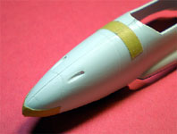

{kind=link}
{kind=link}
{kind=link}
{kind=link}
{kind=link}
{kind=link}
{kind=link}
{kind=link}
{kind=link}
{kind=link}


Wings Models IMAM RO.57 Heavy Fighter
Kit #48025
MSRP $27.45
Images and text Copyright � 2008 by Matt Swan
Developmental Background
During the 1930s and 1940s the Italian aircraft industry was turning out some very advanced aircraft designs however the manufacturing sector was not scaled up enough to produce large volumes and the engine industry was not able to produce power plants with sufficient horsepower to deliver the required performance levels. In an attempt to provide the Regia Aeronautica with a heavy fighter suitable to replace the old and slow Fiat fighters of the day Giovanni Galasso designed the twin engine Ro.57 which was introduced to the world in May of 1939 at the First International Aeronautical Journalists' Congress held in Rome.
The Ro.57 was a single seat monoplane consisted of an all metal, semi-monocoque fuselage with a steel skeleton and Duralumin structure. The wings were surfaced with Duralumin also. Two Fiat A-74 twin bank radial engines producing 840 horsepower each gave the aircraft a top speed of 311 mph at 5000 meters. The operational service ceiling was only 25,500 feet. Initial aircraft were armed with two Breda 12.7mm machine guns in the nose. While a good orientation it was insufficient firepower and a design change added twin 20mm cannons to the nose and hard points were added to carry two 500 kg bombs. Unfortunately this resulted in production delays and weight increases that reduced performance. By time all modifications had been incorporate and production begun in earnest it was 1943 and the type was already becoming obsolete. Only about ten or fifteen of the original fighter type were made and about sixty of the ground support version before production ceased. A further development of the type was attempted with the installation of two Daimler Benz DB601 engines and the addition of a second crew position. Designated Ro.58 it did display improved speed and performance but for Italy the war was just about over and it was too late for the type to be of any practical use.
The Kit
Wings Models kits from Don�s Model Works are vacuform kits that usually include a package of white metal or resin detail parts. These kits come in a clear plastic bag with a couple of pages of instructions covering the basic techniques of working with vacuformed materials. This particular kit consists of two sheets of vacuformed parts and a single sheet of resin detail items. The vacuformed parts are made of good solid white sheet stock and show generally well defined recessed panel lines but they do tend to fade out in certain areas. I think it would be best to trace the panel lines with a scribe before painting just to enhance them a little and give them better consistency. The vac parts cover the basic fuselage, wings and engine nacelles. 
The outer surface is smooth and free of blemishes. There are a few casting boogers in a couple of interior corners but I have seen worse on other vac kits. The fuselage pieces when removed from the master sheet line up very nicely and all the panel lines mate up well. The vac sheet does include some interior parts such as a seat, base floor-pan and instrument panel backing. These pieces are also duplicated in the resin sheet. Overall we get fourteen vacuformed white pieces and two clear vac canopies. The canopies display relatively good raised frame lines but have some odd speckling within the clear panels; hopefully this will disappear with a treatment of Future.
The resin pieces are obviously all cast from a single mold with lots of mold flash. The resin pieces really are nothing to write home about; the engine crank cases are not symmetrical and have large imperfections in them. Engine cylinder heads are devoid of any detail and all lean to the front of the engine. The propellers have some large casting boogers in them but may be salvageable. The resin floor-pan has several large bubbles within the part, the instrument panel detail is soft and mushy and the seat is not much better than the simple piece from the vac sheet. Also included here are resin landing gear struts which is simply insane for this model. There is no way these will be able to support the weight of the finished kit. The kit instructions do give some suggestions on making your own landing gear from metal tubing so this issue seems apparent to the maker. We also get some non-weighted tires that are out of round. Overall the resin pieces are pretty disappointing. Final parts count for the kit is 14 white vac pieces, 2 clear parts and 17 resin pieces for a total of 33 pieces in the bag.
You may click on any of the small images within this article to view larger pictures
Decals and Instructions
The kit comes with two sets of instructions, the first of which is a standard set that will come with any Wings vac kit covering the basic techniques used when working with vacuformed kits. It consists of five pages of text and a single page of illustrations and does cover the basics of making landing gear struts from metal tube. The second set of instructions are those pertaining to the specific kit. This is a single A-3 sheet that begins with a basic history of the aircraft followed by a three view of the model with some basic building tips and a reference list. The last item here is a very simplistic exploded view of the model. If you do not have previous experience building vac kit and doing some scratch building you are going to be in serious trouble here.
Kit provided decals are very basic with national markings with both white and clear backgrounds. The Italian axe logo was initially printed with the blue background being way too dark and a second set of these have been provided with a more appropriate blue backing. The tail cross looks good however the directions suggest you paint a white backing onto the model first indicating that there may be some transparency issues with the decals. On the paper backing they seem to have good color density and print registry.
Conclusions
I love esoteric kits and am a real sucker for this kind of stuff. This kit is a good kit for the basic pieces and if you are an experienced modeler with a good stash of spare parts will make for a good foundation to build this aircraft. The primary vac parts are well made and mate up well, panel lines while a little soft in spots do line up from part to part and offer enough of a form to trace easily with a scribe to create better definition. The resin parts are not good at all and for the most part should simply head to the spares box. Vector makes a very nice Fiat A.74 engine which will replace the kit pieces and you can click on the image at left for a better look at the Vector kit. The cockpit will need some serious scratch work and the landing gear struts should be replaced with home made metal pieces. The wheels may be salvageable or could be replaced with similar aftermarket wheels but at this time I have not matched anything to this kit. There are plenty of casting boogers on the resin propellers and can probably be shaved back to the intended proportions and made to look good. Decals are basic and would benefit from some additions from the spares box.
This is an interesting aircraft and this kit is the only choice in 1/48 scale. Advanced modeling skills are required and should you possess those skills then definitely pick one of these up. Overall I give this kit only a fair rating mostly due to the poor resin pieces and lack of comprehensive building instructions.